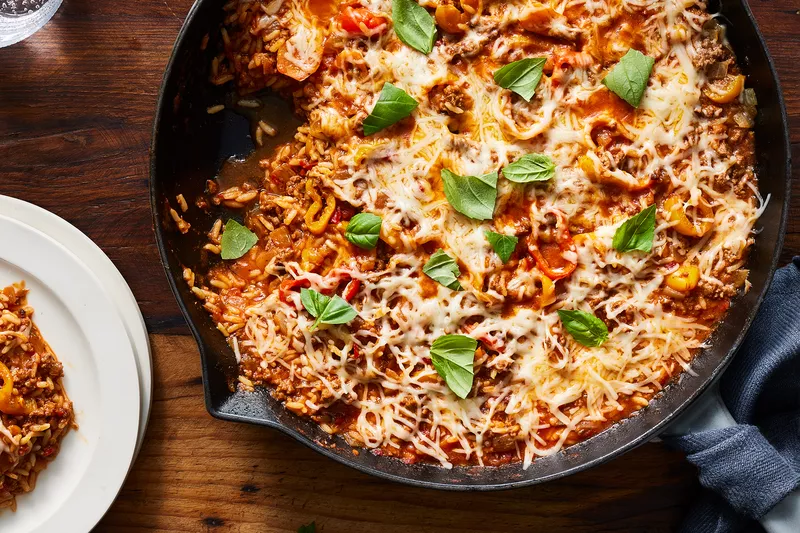

Lasagna

Home Page
Description:
Lasagna is a rich and hearty Italian dish made with layers of pasta sheets, savory meat or vegetable sauce, creamy béchamel or ricotta, and melted cheese, all baked to perfection. The combination of tender pasta, flavorful sauce, and gooey cheese creates an irresistible blend of textures and tastes that is both comforting and indulgent. Every bite is a warm, cheesy explosion of flavor that makes lasagna one of the most satisfying dishes ever!
Ingredients:
- Lasagna noodles
- Ground beef or sausage
- Onion & garlic (chopped)
- Tomato sauce,paste, & crushed tomatoes
- Italian seasoning,salt,pepper,sugar
- Ricotta cheese,egg,Parmesan
- Mozzarella cheese
Steps:
- Cook meat sauce - Brown meat, add onion,garlic,tomato ingredients, and seasoning. Simmer.
- Mix cheese filling - Combine ricotta, egg and Parmesan.
- Prepare noddles - Boil and drain (skip if oven-ready)
- Assemble - Layer sauce, noodles, ricotta mix, mozzarella. Repeat
- Bake - Cover, bake at 375°F (190°C) for 30 minutes, uncover, bake 10-15 minutes.
- Rest & Server - Let sit 10 minutes, garnish and enjoy!